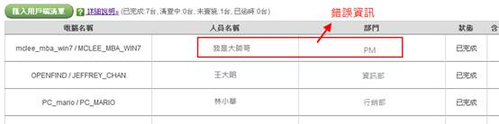
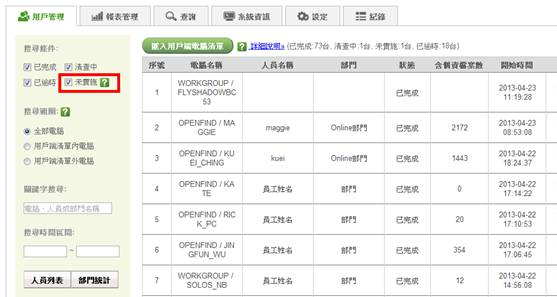
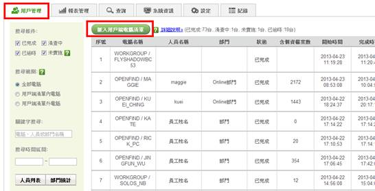
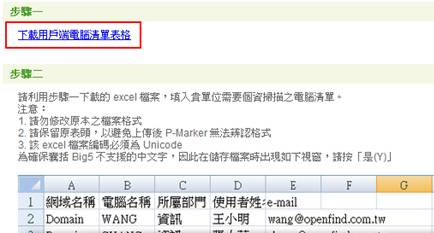
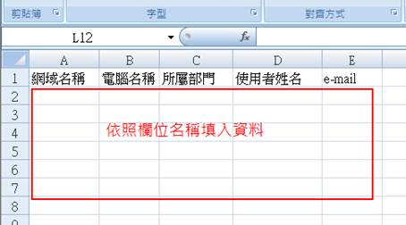
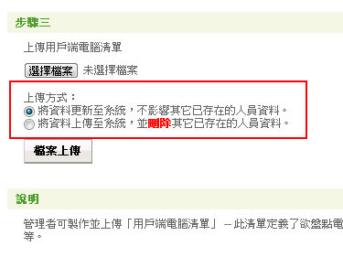
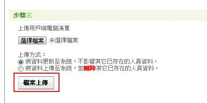

匯入用戶端清單指的是管理者將盤點電腦的資訊（例如：電腦名稱、部門、人員名稱等）以CSV格式匯入系統中。匯入用戶端清單主要有兩個目的：
（1） 系統會將管理者匯入的電腦資訊自動配對到已盤點的電腦，讓管理者可以更清楚的掌握盤點狀況。
舉例來說，若用戶在盤點的過程中輸入錯誤資訊（如下圖），管理者在匯入正確的用戶端清單後，系統就會自動將正確的資訊更正到系統中。

（2） 管理者匯入用戶端清單後，系統會自動比對出清單中哪些電腦尚未進行盤點，管理者可以透過點選搜尋條件中的未實施找出哪些電腦尚未進行盤點。

匯入用戶端清單的操作步驟如下：
（1） 點選功能列中的用戶管理，並點選匯入用戶端清單按鈕。

（2） 點選下載空白用戶端電腦清單表格。

（3） 利用下載的空白用戶端電腦清單表格，填入欲盤點的電腦資訊。

（4） 選擇上傳方式，上傳方式分為：
- 將資料更新至系統，不影響其它已存在的人員資料。
- 將資料上傳至系統，並刪除其它已存在的人員資料。

（5） 點選檔案上傳，並上傳完成的用戶端電腦清單。
